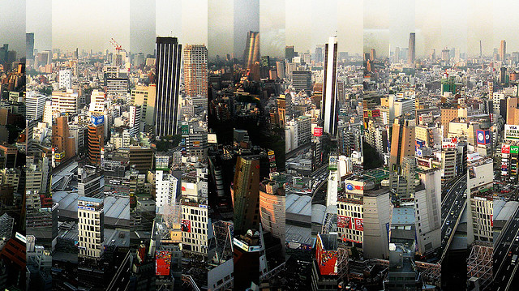
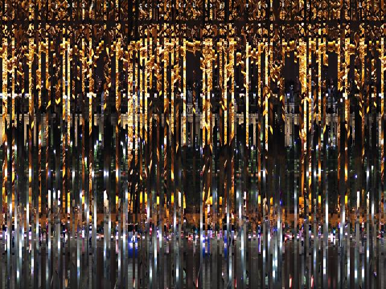
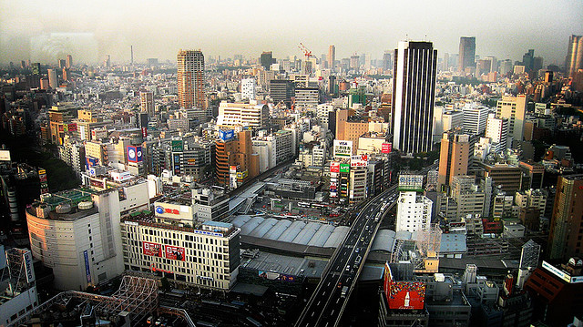
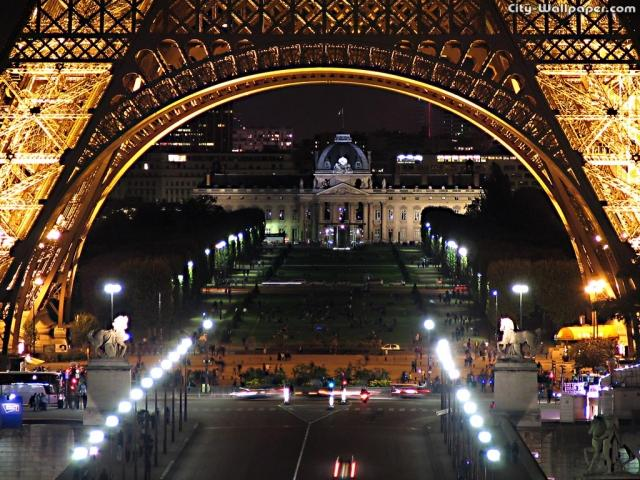

Instagram Unshred Challenge
My attempt at a solution to the Instragram unshredding challenge. Put simply, the challenge is to take a shredded (and randomly put together) images like :

or

and stitch it back together into:

and

How it works:
- We define a distance metric between two columns of pixels. In the current case
the distance is simply the sum over the differences in each pair of corresponding pixels, one from each column. This difference is normalized with the sum of the two pixel value so as to get a relative difference.
-